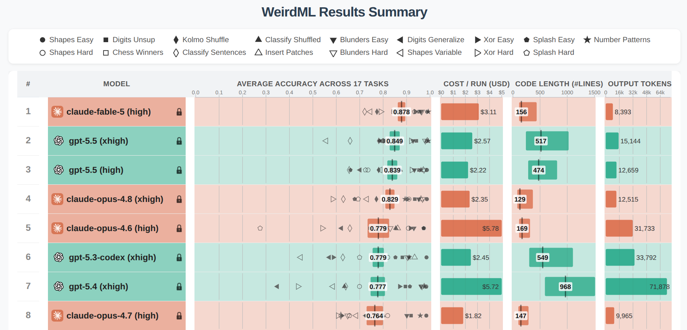

Metrics & leaderboard
How OCF measures the skill of its forecasts and compares forecasting approaches.
Status legend — ✅ Implemented · 🚧 Planned · 🔬 Research. The
Metricsschema, themetricsDagster asset, the deterministic metrics (MAE, NMAE, RMSE, MBE), and the probabilistic metrics (CRPS, spread-skill ratio, pinball loss, PICP, interval width — see the evaluation-metrics reference) are ✅ implemented. The interactive leaderboard visualisation is 🚧 planned. The implemented cross-validation protocol has moved out of the roadmap. See the roadmap index for status conventions. The 🚧 items are tracked under the v0.3 epic #6: baseline forecasters #147 · probabilistic evaluation #225 · tail & exceedance metrics #254 · tricky-days filter #255 · fold hygiene #226.
The leaderboard concept 🚧
Issue: #4
A key deliverable is a leaderboard comparing many forecasting approaches. We plan one
leaderboard per time_series_type, e.g. primary substations, GSPs, BSPs, solar PV sites, wind
farms, BESS, etc.
Each leaderboard will have tens (maybe hundreds) of rows. Each row is one ML experiment: a particular model, trained with a particular set of features, processed a particular way. Entrants must be compared apples-to-apples — same test dataset, same metrics, same assumptions.
Per-experiment configuration, trained weights, and metrics are stored in the project's MLflow database. The leaderboard will be displayed as an interactive table showing multiple metrics at a glance, inspired by the WeirdML leaderboard:

Three commitments guard the comparison, and each links to the reasoning behind it. Every baseline is run from its authors' own repository at its authors' recommended defaults, with no domain-specific tuning, because a team that runs every entry on its own leaderboard risks reporting its own implementation quality as a methodological result — the rule TS-Arena applies, set out with its evidence under Leaderboards of machine learning results. The leaderboard is published with the material needed to check it — the telemetry, the evaluation protocol, the metric definitions, and the code that computes them — so someone outside the project can reproduce a row rather than take it on trust. And negative results get a row, because a leaderboard carrying only the approaches that worked hides how much of the search space was tried; both commitments are argued under Publishing results that others can compare against.
Baseline forecasters 🚧
Issue: #147
No naive baseline exists anywhere in the codebase (only docstring mentions, e.g.
contracts/power_schemas.py:242). Until the leaderboard carries naive rows, XGBoost's NMAE numbers
aren't interpretable — and, more to the point, we can't answer the question this project exists to
answer: do we beat what NGED does today?
Every comparison against a baseline publishes the fraction of series that beat it alongside the average error, never the average alone — see Publishing results that others can compare against for why an average can hide a model getting worse at a substantial minority of series.
The headline baseline — nged_incumbent
nged_incumbent is a faithful reproduction of NGED's incumbent
forecast — the analogue-ensemble method they use today,
with no weather model and no ML. In brief (full description and the operator's-eye view are in the
background page): for each target half-hour it takes the observed power at the same weekday &
time-of-day from the last 6 weeks and from 49–55 weeks back — 13 analogues. NGED plot
and read the analogues by eye, taking the 95th percentile if they need a single number. Reproducing
it matters because it is the bar we have to clear to justify the project — "XGBoost beats
persistence" is the least we must do; "XGBoost beats the incumbent" is the deliverable. It is the
first baseline we implement; if we implement only one, it is this one.
nged_incumbent fits our existing machinery, because every one of its 13 members is just a power
lag:
- Weekly group (last 6 weeks, same weekday & time):
power_lag_168h, 336h, 504h, 672h, 840h, 1008h - Annual group (49–55 weeks ago, same weekday & time):
power_lag_8232h, 8400h, 8568h, 8736h, 8904h, 9072h, 9240h
So it rides the same audited, no-lookahead pipeline as PersistenceForecaster (below) with zero new
time-series logic. _nullify_leaky_lags already sheds the shortest members as lead time grows (past
7 days the 168 h member nullifies, past 14 days the 336 h, and so on). That shedding leaves the
annual members to carry the full 14-day horizon. Because the shortest member is a week old, the
incumbent has no short-horizon skill from recent power — realistic, since that is exactly what
NGED do today, and a reason to keep the pure PersistenceForecaster as a contrast rather than to
sneak a recent-power member in.
nged_incumbent is also our first probabilistic baseline — and this is the faithful
representation, not a bonus. The plotted spread is the incumbent's output — an operator reads it
by eye. We emit the 13 analogues as 13 ensemble_member rows and let the probabilistic
metrics score them with no extra
implementation work — scoring the spread is the closest automatable proxy for the plot a human
actually reads. Two consequences follow.
ensemble_member is overloaded here. For NWP models that column indexes an NWP ensemble member;
for nged_incumbent it indexes a historical analogue. Same column, different meaning. We document
this on the PowerForecast / AllFeatures schema so nobody assumes ensemble_member ⇒ NWP. The
incumbent synthesises its ensemble inside predict() (by unpivoting its analogue-lag columns into
member rows) rather than consuming an NWP ensemble; it runs with weather_source: "none".
Deterministic collapse is a property of the metrics layer, not the incumbent. The incumbent
emits its 13 members and nothing else; the metric-matched collapse
decision then scores its MAE on
the members' median (apples-to-apples with every other model's central forecast) and reports NGED's
actual operating point — the 95th percentile — as a labelled secondary number (mae/mbe at
metric_param="p95"). Being deliberately conservative, the P95 carries a large positive MBE by
design (a peak-safety choice, not a forecasting error), so it belongs beside the central metric.
Either way NGED weight the analogues equally ("no further processing at all"), so equiprobable
members — and the probabilistic metrics (CRPS etc.) computed over them — are faithful, not an
approximation.
A faithful replica and a "simple upgrades" variant
Most of the benefit may come from a few simple upgrades to what NGED already do, not from heavy ML — the message the pair of baselines is built to test. We implement two closely-related incumbent baselines:
nged_incumbent— the faithful replica above. No holiday handling; warts and all. Pure lag features.nged_incumbent_holiday_aligned— the same skeleton, but analogue selection becomes calendar-aware: a bank-holiday target draws from prior bank holidays / the matching day-type (a bank-holiday Monday behaves like a Sunday). Moveable feasts align holiday-to-holiday (Easter→Easter) rather than by fixed week offset. This no longer rides the pure lag machinery — the analogue offset is conditional on the calendar — so it needs a bespoke picker plus a GB bank-holiday calendar (the pure-Pythonholidayspackage), and ships as an immediate follow-up PR.
Persistence and climatology — diagnostic bookends
The incumbent is really a hybrid — its weekly group is persistence-like recency, its annual group is climatology-like seasonality — so the two pure forms are still worth having: they isolate short-horizon from long-horizon naive skill. Persistence is famously hard to beat at 0 to 6 hours.
The climatology row measures where the weather ensemble stops adding skill over a plain seasonal average — a cross-over point with no published figure for substation load, so far as we have found. The climatology row asks the same question at the far end of the horizon: once the weather ensemble has run out of lead time to be informative, does the forecast still beat a plain seasonal average? We have found no published figure for where that cross-over falls for substation load. Buizza and Leutbecher (2015) put the lead time beyond which a weather ensemble stops beating a climatological distribution at 16 to 23 days. But that figure was measured on upper-air variables rather than on a load forecast against a load climatology (see Horizon, ensembles, and tails). The climatology row is therefore how we measure the cross-over, not a number we can already assert. A model could "win" the leaderboard while adding no skill over either bookend, and without these rows nobody would know.
Side benefit: several more BaseForecaster implementations pressure-test the abstraction (the docs
promise the interface is model-agnostic; today only XGBoostForecaster exercises it).
How much the choice of reference moves the answer has been measured, and it argues for reading a win over either bookend as the optimistic end of the range. Nguyen and Müsgens (2026) include the reference model as a regressor across 4,687 skill scores drawn from 188 solar forecasting papers. They find that a forecast scored against plain persistence reports a skill score 10.7 percentage points higher at horizons beyond 6 hours than the same forecast scored against a convex combination of smart persistence and climatology, with smart persistence alone 9.0 points higher. They recommend the combination as the more demanding benchmark. Two differences before carrying the number across: their smart persistence is persistence corrected by the clearness index and their climatology is a constant equal to the sample mean, both narrower than the rows described here, and their sample is deterministic solar forecasting rather than probabilistic substation net demand. The direction survives both — a margin over persistence alone, or over climatology alone, flatters a forecast that a combined reference would judge more harshly.
This sensitivity to the choice of reference is an argument for keeping nged_incumbent as the
headline bar, not for building a fourth baseline. The incumbent already blends recency with
seasonality — the last 6 weeks of same-weekday, same-time-of-day analogues alongside the
49-to-55-weeks-back group — so it plays on substation load the role the combined reference plays on
irradiance. The incumbent is also the bar that decides whether the project is worth its money.
Persistence and climatology stay as diagnostic bookends, read as the loose end of the range rather
than as the benchmark a win should be claimed against.
Carrying a loose bookend and a tight bookend is what the published guidance recommends — see
Leaderboards of machine learning
results for
Doubleday et al. (2020)'s case for carrying a
yardstick benchmark and a point on the yardstick together. Persistence and climatology are the
yardstick here; nged_incumbent is the point on it.
Implementation details — baselines (deleted when they ship)
Five PRs, in order. PRs 1–2 are shared-framework groundwork (no baseline yet); PRs 3–5 add one
baseline each. The nged_incumbent_holiday_aligned variant (described under A faithful replica and
a "simple upgrades" variant) is a later sixth
PR, out of scope for this arc but given its own tracked issue so it is not lost when #147 closes.
Guiding principle — no special path. New workspace package packages/baseline_forecasters/
mirroring the xgboost_forecaster layout (pyproject.toml, src/baseline_forecasters/, tests/),
added to the root pyproject.toml [tool.uv.sources] and dependencies. Every baseline subclasses
BaseForecaster and rides the identical asset chain (register_experiment_job →
trained_cv_model → cv_power_forecasts → metrics) that XGBoostForecaster uses — a train()
that only records trained_time_series_ids and a meta.json-only save() need no extra
engineering effort, and the uniform provenance is exactly what makes re-running routine. Re-running
cross-validation (CV) for any algo is then a native Dagster operation: select
trained_cv_model++ in the asset graph (two + — metrics is two hops downstream, so a single
+ would silently stop at cv_power_forecasts and skip scoring), choose the experiment's
partitions, and launch a backfill. The unpartitioned metrics asset materialises once afterwards
with its default config (no filter, leaderboard scope). Verify this drill end-to-end on a
smoke-test fold before documenting it — the Dagster version supports mixed partitioned/unpartitioned
backfill selections, but confirm the UI behaviour rather than assuming it. To re-score a single
experiment without touching the rest, use the metrics asset's PopulationFilter config instead.
PR 1 — deterministic-collapse rework in compute_metrics. Implements the metric-matched
collapse decision. Forecasters
emit members only; every collapse lives in the metrics layer, so there is no per-experiment
collapse config and no designated point-forecast columns on PowerForecast. In
packages/ml_core/src/ml_core/metrics.py:
- In the per-run aggregation, emit both
power_fcst_mean(.mean()) andpower_fcst_median(reuse the already-computedq_p50empirical-quantile column — Polars.quantile(0.5, "linear")is exactly.median()), and keepq_p95. - Score
mae/nmaeon the median error;rmse/mbeon the mean error; the spread-skill denominator stays the mean-error RMSE (its Fortin "1.0 = calibrated" target is defined against the mean). Add extra labelled rows:mae/mbeatmetric_param="p95"(NGED's operating point) andmbeatmetric_param="p50"(bias of the delivered median).METRIC_PARAMSalready contains"p95"and"p50"(both are inDELIVERY_QUANTILES), so noMetricsschema change — and the primary key includesmetric_param, so the new rows do not collide with themetric_param="all"headline rows. - Extend the MLflow allowlist
_MLFLOW_LOGGED_PARAMETRICwith("mbe", "p95")and("mbe", "p50")so the operating-point bias and the median's bias appear on the leaderboard (aggregate keys come out distinct, e.g.mbe_p95__allvsmbe__all). - Update the docstrings that currently say deterministic metrics are "scored on the per-run ensemble
mean" (
METRIC_NAMESincontracts/ml_schemas.py), theMetrics.metric_paramfield description (no longer pinball-only), and the_MLFLOW_LOGGED_PARAMETRICkey-count claims. The promoted evaluation-metrics reference section must state explicitly that MAE/NMAE and RMSE/MBE score different point forecasts and why (otherwise the first person to recompute RMSE from the stored median members files a bug), and note the identitymae ≡ 2 × pinball_loss@p50as a deliberate internal consistency check. - Tests: member sets where mean ≠ median ≠ p95, with hand-computed expected values per metric; the single-member ensemble (all collapses coincide; CRPS still reduces to MAE); the pinball-p50 identity. Recompute existing expected values — never relax a test to absorb the shift.
- No standalone re-score needed: the one backfill after PR 2 (below) covers it.
PR 2 — CV predict-path framework: uses_nwp_ensemble, power-lag lookback, ensemble_member
docs. Three changes to the shared rails, none baseline-specific.
uses_nwp_ensemble: ClassVar[bool] = TrueonBaseForecaster.cv_power_forecastspassesensemble_members=[0]toload_engineering_inputswhen a class sets itFalse. Semantics to document:True→ the forecaster consumes the NWP member axis (output members = NWP members);False→ the forecaster does not fan out across NWP members — it either passes member 0 through (persistence) or synthesises its own member axis (nged_incumbent: 13 analogues;climatology: quantile-derived members). This is model-family identity, likeMODEL_NAME, so aClassVaris correct. The class is resolved from the experiment'sforecaster_targetMLflow tag before inputs are loaded, so the flag is available in time. Document alongside it thatweather_source: "none"does not mean "no NWP input": in bulk mode the control-member NWP scan defines the shared(init_time, valid_time)forecast-run grid, which is what keeps every leaderboard row — baseline or ML — scored on the identical grid.- Power-lag lookback at feature-engineering load time. Today
load_engineering_inputsfilters power to[window_start, window_end], and_apply_power_lagreads lags from that same frame — so any lag longer than the elapsed window is null. This is a real existing gap: XGBoost's 336 h lag is null for the first fortnight of every validation window, and the incumbent's 49–55-week lags would be null for all but roughly the last 3 weeks of the fold (lag targets only re-enter the window fromval_start + 49 weeks). Fix: apower_lookback: timedeltaparameter that widens only the power scan's lower bound (window_start − power_lookback); callers derive it from the experiment'sselected_featuresviaParsedFeatures(max power-lag hours), so it is automatic per-experiment (~2 weeks for XGBoost, ~55 weeks for the incumbent). Safe because the bulk-mode spine is NWP-centric (_join_nwp_bulk_modeleft-joins power onto NWP rows), so the extra early power rows feed only the lag lookup and add no spine rows and no label rows (labels live on spine rows, bounded by the NWPvalid_timefilter); and_nullify_leaky_lags(which nulls any lag withlead ≥ lag_hours) still guards leakage, so a longer lookback cannot leak. Apply to bothtrained_cv_modelandcv_power_forecasts.LIVE_POWER_HISTORYinproduction_assets.pyis a hard-coded 15-day equivalent for the live path — leave it, but cross-reference it from the new parameter so a future long-lag live model is not silently starved. Add a comment wherecv_power_forecastsre-scans the widened power window perinit_timechunk (fast next to NWP, but worth flagging so nobody blames the wrong step when profiling). - Document the
ensemble_memberoverload onPowerForecastandAllFeatures: an NWP-member index for NWP-consuming models, a historical-analogue index fornged_incumbent, a quantile-sample index forclimatology. Nobody may assumeensemble_member ⇒ NWP. - Tests: a dummy
uses_nwp_ensemble = Falseforecaster exercising the member-0 path; a feature- engineer test that a 336 h lag at the window edge is non-null with lookback while the spine row count is unchanged; the leak test unchanged; the single-run (live) path unaffected bypower_lookback. - After PRs 1 + 2 land back-to-back, run one
trained_cv_model++backfill over every existing experiment partition — retrain, re-predict, and re-score everything under the fixed lag lookback and the new collapse. This is deliberately the exact "re-run everything after a pipeline fix" drill, and it doubles as the empirical verification of the backfill mechanics before the recipe is written intodocs/ml_experimentation/dagster-workflow.md. Treat both PRs as a single leaderboard epoch event, since each shifts existing numbers.
PR 3 — package skeleton + PersistenceForecaster (seasonal-naive; the lowest-effort end-to-end
probe). Ships the package and proves the PR-2 framework on the simplest model.
- Shared helper
_meta_io.py: themeta.jsonsave/load round-trip (config dump,trained_time_series_ids, the fully-qualifiedmodel_class). NoStatelessForecasterbase class until a third stateless model exists. MODEL_NAME = "persistence",MODEL_VERSION = 1,uses_nwp_ensemble = False. Config defaultselected_features = {"power_lag_24h", "power_lag_48h", "power_lag_168h", "power_lag_336h"}.train()records the sortedtrained_time_series_ids(the requested ids present in the data, mirroring XGBoost's "no usable rows → not trained" semantics).predict()=pl.coalesceof the lag columns in ascending-lag order —_nullify_leaky_lagsnulls any lag withlead ≥ lag_hours(so the 24 h lag survives all intraday leads), and coalesce then selects the shortest non-leaky lag per row: same-time-yesterday for day-1, last-week for day 2–7, two-weeks-ago beyond. Zero lookahead risk because it rides the audited pipeline. Output keeps the spine'sensemble_member(= 0 only, given member-0 inputs), cast UInt8 → Int8 via an expression cast, followingXGBoostForecaster._build_part(a dict-.cast({...})on the concat-of-group-by frames would hit the Patito cast trap). Rows where all lags are null are dropped, the count logged, and the per-series dropped/coverage counts recorded in asset metadata.conf/model/persistence.yaml:weather_source: "none",training_strategy: "none".- Tests: unit (shortest-non-leaky selection on a hand-built
AllFeaturesfixture; all-null-row dropping;save/loadround-trip freezing ids) plus an integration smoke fold via thetests/test_trained_cv_model.pyfixture pattern. - Register (
smoke_test→full_cv), materialise the chain, sanity-check: NMAE worse than XGBoost overall but plausibly competitive intraday; single-member CRPS = MAE; spread-skill 0; PICP / interval width degenerate (expected and ignorable for a deterministic baseline). - Coverage caveat: persistence's longest lag is 336 h, so leads in
[336 h, ~360 h]drop out and itsall/extended_rangeaggregates cover a shorter lead population than other models'. Fair CRPS is size-comparable so nothing is wrong, but state the caveat where the sanity numbers are read, backed by the per-series coverage counts in asset metadata.
PR 4 — NGEDIncumbentForecaster (nged_incumbent; the deliverable). The faithful replica,
landing on a now-proven rail.
MODEL_NAME = "nged_incumbent",MODEL_VERSION = 1,uses_nwp_ensemble = False,weather_source: "none". Confign_weekly_analogues = 6andannual_week_span = (49, 55)drive the 13 analogue lags (weekly168h × {1..6}; annual168h × {49..55}= 8232…9240 h — all within the feature parser's 17 520 h cap), withselected_featuresderived from them so a variant needs only one override.predict()unpivots the 13 analogue-lag columns intoensemble_memberrows (member index = analogue index; Int8 holds 0–12). Members nulled by_nullify_leaky_lags(as lead time grows, the short weekly members shed first) or by insufficient history are dropped; rows where all members are null are dropped with the count logged and per-series surviving-member counts recorded in asset metadata. No point forecast is emitted — PR 1's metrics layer produces the median headline and the p95 / p50 labelled rows.- Depends on PR 2's lookback (the 55-week annual lags are all-null without it).
- Data check before interpreting results:
val_start − 55 weeks≈ mid-2024. Confirm which eligible series actually have observations that far back — eligibility requires onlymin_training_monthsof history, so a series can qualify yet have too little for the annual analogues, degrading silently to a weekly-only (≤6-member) ensemble. Nothing crashes and fair CRPS stays size-comparable, but the leaderboard means then average differently-shaped ensembles across series, so surface the per-series member counts rather than discovering it later in a dashboard. - Tests: hand-computed unpivot to the expected members; the median, p95, and p50 collapses match
hand-computed values through
compute_metrics; leaky-lag shedding as lead grows;save/loadround-trip; an integration smoke fold with a synthetic power history spanning the annual lags. Sanity-check: the median is a roughly unbiased central estimate whilembe@p95shows a clear positive bias (the conservative operating point — not a bug); no short-horizon skill (the shortest member is a week old, which is realistic). - Ship-time triage: delete this item's details (summary → PR body); cross-link the NGED's incumbent forecast background page.
PR 5 — ClimatologyForecaster (climatology; the pure probabilistic reference). The calendar-
only skill floor the NWP ensemble must clear at long horizons.
MODEL_NAME = "climatology",MODEL_VERSION = 1,uses_nwp_ensemble = False.train(): from the features frame take(time_series_id, valid_time, power)and dedupe on(time_series_id, valid_time)first — bulk-modeAllFeaturesrepeats each target row once per covering(nwp_init_time, ensemble_member)(~15× at a 15-day horizon), so without the dedupe the per-cell samples would be weighted by NWP-run coverage rather than by calendar. Then, per(time_series_id, month, half-hour-of-day, is_weekend)cell, store the empirical quantiles of that cell's power samples. Cell keys derive from local (Europe/London) time computed inside the forecaster fromvalid_time, aligning with the demand rhythm (and matching thelocal_*time features).save()writes the lookup as one parquet +meta.json.- Member emission — equiprobable levels, not the delivery levels. Emit members at equiprobable
quantile levels
(i − 0.5)/m, not at the tail-heavyDELIVERY_QUANTILESlevels. Fair CRPS and the per-run empirical delivery quantiles the metrics layer derives from members treat members as an equiprobable sample. Feeding 13 members at the delivery levels in with equal weight would put 7.7 % of the mass atq(0.01)andq(0.02), i.e. an ensemble materially wider-tailed than the climatology it represents, corrupting CRPS, PICP, and the derived delivery quantiles. The delivery quantiles are still produced — bycompute_metrics' per-run quantile aggregation, same as every other model. Keepm = 13: over the ~14-month training window a weekend cell holds only ~9–17 samples (weekday ~21–43), so quantile levels below ~0.06 are already min-sample extrapolation and 51 members would be false precision plus ~4× morepower_forecastsrows; only raise it with empirical justification. predict(): join the lookup onto the prediction rows by the cell keys (rows in an unseen cell dropped with the count logged), then unpivot the quantile columns intoensemble_memberrows.- Why a distribution, not a mean: a deterministic climatology forecast collapses CRPS to MAE, so
it could only be compared against the ML ensemble on point accuracy — the axis a squared-error
XGBoost is built to win. The claim we need to test is distributional: does the NWP-driven ensemble
know more about day 8–14 power than the plain seasonal/time-of-day distribution, or is it dressing
up climatology in weather-shaped clothing? (See Probabilistic forecasting from NWP
ensembles.)
Only a quantile/ensemble climatology answers that, via
crps__all__extended_rangehead-to-head. Caveat to record where that comparison is read: a deterministic-quantile ensemble slightly out-scores an i.i.d. ensemble of the same size under fair CRPS (a known property of Ferro's correction), so climatology carries a small structural edge in exactly this comparison — read a near-tie as "the NWP ensemble is worth little out here", not as climatology winning outright. - Known limitation, documented not solved: small per-cell samples make the tail quantiles noisy; pooling adjacent months is a possible refinement if the numbers look ragged.
- Tests: hand-computed per-cell quantiles; the dedupe (a duplicated spine must not change the
quantiles);
save/loadround-trip; an integration smoke fold; CRPS flows over the members. - Ship-time triage: unblocks
#354 (the dashboard
climatology reference band). As the last 🚧 baseline item, delete the whole "Implementation
details — baselines" section (summary → PR body), close #147, and update the status banner plus the
milestone section in
docs/roadmap/index.mdif the arc changed.
Recipe confirmed by NGED (July 2026). No open questions remain. Full write-up in NGED's incumbent forecast; the implementation spec:
- Weekly analogues: the last 6 weeks, same weekday & time-of-day.
- Annual analogues: the 7 weeks spanning 49–55 weeks back, same weekday & time.
- Deterministic value: NGED's own operating point is the 95th percentile of all 13 analogue values ("more of a vibe") — reported alongside the metric-matched median headline (PR 1).
- No further processing: no weighting, no holiday handling, no anomaly rejection, no load-growth scaling. (This is precisely why the holiday-aligned variant is a genuine, un-done upgrade — not a reimplementation of a method NGED already uses.)
Cross-cutting. (1) Issue hygiene: create one tracked sub-issue per PR under epic
#6 / #147 following the
github-issue-pr-workflow skill's issue-creation rules (labels, Type, OCF project fields, sub-issue
ordering), including one for nged_incumbent_holiday_aligned so it survives #147 closing. (2)
Re-run recipe: add a short "Re-running CV for an experiment" subsection to
docs/ml_experimentation/dagster-workflow.md describing the trained_cv_model++ backfill, written
only after the drill is verified end-to-end, and mentioning PopulationFilter for single-experiment
scoring. (3) MLflow re-logging on a re-run is idempotent in effect (latest value wins; history
accumulates harmlessly).
Cross-fold validation
The cross-validation protocol is implemented, so it has moved to its permanent home: ML Experimentation → Cross-validation folds. That page covers the expanding-window protocol, the current single fold (and why the available weather data constrains us to it), the target multiple-yearly-fold protocol, and the fold-design alternatives we considered.
Fold hygiene: selection bias and a final-test window 🚧
Issue: #226
The single leaderboard fold (mid_2025_to_mid_2026 in conf/cv/default.yaml) serves as both the
model-selection set and the reported skill number, which the review already names as a source of
optimistic bias — see Leaderboards of machine learning
results for
Hyndman (2020)'s M3/M4 warning and Pinheiro et
al. (2023)'s one-year minimum, both of which our
own fold already meets in length but not in independence. With hundreds of planned experiments (the
roadmap mentions auto-experimentation driven by a large language model (LLM) in v0.5), the winner's
reported skill will grow more optimistically biased over time. Our own fold is small in effective
sample size rather than in row count, because consecutive half-hours are strongly correlated. The
epoch mechanism handles data changes but not adaptive selection on a fixed fold.
The structural fix — reserving a genuinely untouched final-test window — waits on Dynamical.org's ECMWF ENS backfill, which is not expected until ~November 2027, after v1.0. A second independent year of data is what makes that reservation possible without shrinking the fold that decides promotion, and that year does not exist yet (the backfill will not arrive in time). Everything below is what guards the leaderboard in the meantime.
We adopt the Ladder, so a new best is published only when it beats the standing best by more than a margin. The published score is then reported rounded to that margin. Blum and Hardt (2015) designed the Ladder for machine-learning competitions that publish a leaderboard and accept repeated submissions — the same shape of risk hundreds of experiments create when every one of them is adjudicated on one fold. Every query against a held-out set leaks a little information about it back to the experimenter. The margin-plus-rounding rule caps how much a single query can leak.
The persistence and climatology baselines are rerun, unchanged, on every leaderboard epoch's evaluation window, so growth in the data is never mistaken for improvement in the method. A new epoch can widen the leaderboard's telemetry archive or its NWP archive. That widening moves every metric on the leaderboard, including the baselines' own. Rerunning the same frozen baseline code on the same epoch's window is what lets a widening gap between a model and a baseline be read as a project result rather than as the dataset simply growing. The precedent is CAMEO, a structure-prediction benchmark that keeps its baseline pipelines frozen while the protein-structure databases behind them keep updating (Robin et al. (2021)).
Until the structural fix lands: leaderboard metrics are selection metrics; differences smaller than fold-level noise should not drive decisions; and the number of experiments per epoch is itself a relevant statistic (visible as the MLflow experiment count).
The mid_2025_to_mid_2026 fold, at its full 12 validation months, is what decides promotion — not
a separate, untouched final-test set. A promotion decision has to be made in minutes rather than
months, so it has to be judged against a window of history that already exists rather than a window
still arriving. It also cannot be judged on less than a year, because a shorter window cannot show
whether a model handles both ends of the annual cycle — the one-year minimum Pinheiro et al. set out
above, and the same minimum the cross-validation
protocol
already builds the single fold around. That fold is read through the Ladder guard and the caveats
already stated in this section.
Measuring a promoted model's performance on live data is a separate question from deciding which model to promote, and this page keeps the two apart. Every model running in production is also scored against live data as it runs (production monitoring), which answers "is the promoted model still performing", continuously and after the fact. The fold above answers "which candidate should we promote", once and ahead of the fact, and the two answers must not be blurred into a single answer. TS-Arena avoids reusing any fixed evaluation window at all (Meyer et al. (2026)); Flexpectation's promotion decision cannot work that way, for the reason just given, and it is the live-monitoring check where our practice matches the TS-Arena pattern instead.
Implementation details — final-test window (deleted when it ships)
1. Document the caveat (immediately). A short "Selection bias" subsection in
docs/ml_experimentation/cross-validation-folds.md restating the paragraphs above. This is the only
step that can be taken now.
2. Reserve a final-test window once a second, independent year of data exists — not by shrinking
the fold that decides promotion. That waits on Dynamical.org's backfill, which is also what turns
the single fold into a genuine multi-fold epoch, so the final_test fold and the further
leaderboard folds are founded in one new epoch in conf/cv/default.yaml rather than over two. The
final_test fold needs a per-fold flag that keeps it out of every run mode, so no experiment trains
or scores on it in the normal flow: extend CvConfig / the fold schema in
packages/contracts/src/contracts/config_schemas.py, and make sure _fold_ids_for_run_mode in
defs/jobs.py includes the fold in no run mode at all. Scoring against it is then a deliberate,
rare act — champion candidates immediately before promotion only — through the metrics asset's
existing ad_hoc evaluation scope, so no new asset is needed and the discipline is procedural.
Whether the leaderboard-fold model can be reused as-is, or needs its own training run, depends on
where the disjoint year sits relative to mid_2025_to_mid_2026 — decide that once the backfill
lands. Two rules go in alongside it: final-test results are never used to choose between
candidates, because that re-creates the problem the window exists to solve; they exist to report
honest skill for the chosen champion and to detect gross overfitting (final-test NMAE ≫ validation
NMAE).
A multi-fold gotcha to handle when folds proliferate. The parent-MLflow-run aggregation in the
metrics asset averages each metric key over only the folds in which that key appears
(exp_metrics.setdefault(key, []).append(value) then sum/len in defs/cv_assets.py). Today every
fold emits the same key set, so this is invisible. Folds with different horizon coverage — one
fold's forecasts stopping at 36 h, another's reaching day 14 — would emit different
per-horizon-slice keys. rmse__all__extended_range would then silently average over a different
fold subset than rmse__all, with nothing marking the smaller denominator. Per-time_series_type
keys have the same property if fold populations differ. When adding any fold, either guarantee every
leaderboard fold emits an identical key set, or make the parent-run aggregation record its per-key
denominator.
Verification. register_experiment_job must never create a partition for the final_test fold
in any run mode (extend tests/test_register_experiment_job.py); and once the disjoint year lands,
score one existing experiment against the reserved window end-to-end and confirm the rows reach
forecast_metrics.delta with the window label while nothing is logged to the leaderboard MLflow
runs.
Evaluation metrics
| Metric | Type | Status | Purpose |
|---|---|---|---|
| Mean absolute error (MAE) | Deterministic | ✅ | Typical error magnitude (MW). |
| Normalised MAE (NMAE) | Deterministic | ✅ | MAE normalised by the series' effective capacity (full-history P99) — comparable across substations of different sizes. |
| Root mean squared error (RMSE) | Deterministic | ✅ | Heavily penalises large misses (one 100 MW error costs more than two 50 MW errors). |
| Mean bias error (MBE) | Deterministic | ✅ | Systematic over/under-prediction. |
| Histogram of errors | Deterministic | 🚧 | Visual check that errors are ~Normal. |
| Pinball loss (quantile loss) | Quantile | ✅ | Penalises asymmetrically by target quantile, at the 13 NGED delivery quantiles. Averaged across quantiles for a single quantile-skill score. |
| PICP (Prediction Interval Coverage Probability) | Quantile | ✅ | Coverage of six symmetric bands (p1–p99 … p35–p65). Judge against the finite-ensemble calibrated reference (≈ 0.769 for p10–p90 at 51 members), not the nominal rate. |
| Interval width | Quantile | ✅ | Mean band width (MW) — the sharpness companion that stops PICP being gamed by over-widening. |
| CRPS (Continuous Ranked Probability Score) | Ensemble | ✅ | Probabilistic equivalent of MAE; rewards both accuracy and sharpness. Fair (finite-ensemble-unbiased) form — the one metric comparable across ensemble sizes. |
| Spread-Skill Ratio | Ensemble | ✅ | Fortin-corrected RMS ensemble spread ÷ RMSE of the ensemble mean. 1.0 = well-calibrated; < 1 under-dispersed (overconfident); > 1 over-dispersed (underconfident). |
| Threshold-weighted CRPS (twCRPS) | Ensemble | 🚧 | CRPS confined to behaviour above a per-series threshold — the ranking-grade metric for skill near the network limit. See Tail & exceedance metrics. |
| Exceedance rate of upper quantiles | Quantile | 🚧 | "When we said p95, was it exceeded ~5% of the time?" — one-sided calibration check for the delivered tail quantiles. |
| Brier score for threshold exceedance | Ensemble | 🚧 | Grades the ensemble's "chance load exceeds the threshold" probability — the score for the yes/no warning NGED acts on. |
The
Metricsschema (contracts.ml_schemas.Metrics) stores results as(time_series_id, power_fcst_model_name, fold_id, horizon_slice, metric_name, metric_param, metric_value).metric_paramcarries, e.g., the quantile for Pinball Loss (p10) or the band for PICP (p10_p90). ThemetricsDagster asset computes every ✅ metric above and writes per-series rows toforecast_metricsDelta (partitioned byexperiment_name, fold_id), with per-fold and mean-across-folds aggregates logged to MLflow — see Running an ML experiment end-to-end.
Every metric above is also broken out by named population-filter slices, which appear as extra leaderboard columns. Most are legitimate ranking columns, because the filter is fixed by information known before the outcome: the horizon slice a forecast falls in, the Tricky days calendar, and logged switching events. Two are diagnostic only and must never drive ranking, because they select hours by what actually happened and so reward a model that simply over-forecasts (the forecaster's-dilemma trap): the peak-events slice (the top 5% highest observed demand) and NGED's hand-picked hard examples. Both are described under Tail & exceedance metrics.
Every ratio between a model and a reference is corrected for the ensemble-size bias Weigel et al. (2007) describe, and carries its reference forecast, population, and ensemble-member count — see Publishing results that others can compare against for the general commitment. The fair, finite-ensemble-unbiased CRPS in the table above is the form that carries this correction. PICP is judged against the finite-ensemble calibrated reference rather than the nominal rate for the same reason.
Which ensemble collapse defines the deterministic point forecast? 🚧
Decided: metric-matched collapse, uniform across every model. Implemented as part of the baseline work (PR 1 in the baseline implementation details); the reasoning below is the durable design rationale, promoted to the evaluation-metrics reference when that PR ships.
The problem
The deterministic metrics (MAE, NMAE, RMSE, MBE) score a single point forecast, but every model
on the leaderboard is really an ensemble (51 NWP members for the ML models; 13 historical
analogues for nged_incumbent; a quantile sample for climatology). The metrics layer has to
collapse each ensemble to one number. compute_metrics today collapses every ensemble to its
mean (packages/ml_core/src/ml_core/metrics.py), and the risk we were guarding against was that
different models would be scored on different collapses — e.g. the ML models on their mean and
nged_incumbent on the median that NGED effectively reads off its analogue spread. Mean and median
diverge for skewed or underdispersed ensembles, so scoring some models on one and some on the other
is not apples-to-apples — a silent trap that quietly mis-ranks models.
Mean versus median — the trade-off
The instinct is to "pick one central statistic and apply it everywhere". But mean and median are not interchangeable, and the difference between them decides which one to use where.
The mean is the point forecast that minimises squared error — so RMSE (and MBE, which is a
mean-of-errors and inherits the mean's clean energy-balance / expectations-aggregate reading) is
consistent with the mean. Our squared-error XGBoost models literally learn a conditional mean, and
the ensemble mean of 51 such members is a coherent estimate of E[power]. Scoring the mean on RMSE
rewards a model for reporting its honest conditional mean. The mean also averages out member noise,
so it is the more stable statistic on a small ensemble, and it matches standard NWP verification
practice.
The median is the point forecast that minimises absolute error — so MAE and NMAE are
consistent with the median. It is robust to the skew that is real in this problem (holiday weeks,
solar clipping) and to the ensemble underdispersion the probabilistic
section documents, it is the faithful reading of NGED's
equally-weighted analogue spread, and it is coherent with the quantile columns already on the
leaderboard: median MAE is exactly 2 × pinball_loss@p50, so a median headline makes the
deterministic and probabilistic columns tell one story.
The key realisation is that MAE and RMSE elicit different functionals, so no single collapse is fair on both columns. A uniform median is inconsistent for RMSE (it penalises squared-error models for forecasting their honest mean); a uniform mean is inconsistent for MAE (a model could improve its MAE ranking by warping its forecast away from its honest mean — Gneiting 2011, Making and Evaluating Point Forecasts). The apples-to-apples requirement is only that the collapse be uniform across models, not across metrics.
The decision
Score each deterministic metric on the ensemble collapse it is consistent with, the same way for every model:
- MAE / NMAE ← ensemble median (NMAE is the headline cross-series metric, so the headline is effectively median-based).
- RMSE / MBE ← ensemble mean.
- Spread-skill ratio ← ensemble mean, internally, unchanged — its Fortin calibration target
(RMSE of the ensemble mean =
√((m+1)/m) ×RMS spread, so "1.0 = calibrated") is defined against the mean; switching its internal collapse would silently break that reading.
Everything else is an extra, labelled row, never a headline: NGED's P95 operating point
(mae/mbe at metric_param="p95" — conservative by design, so a large positive MBE that belongs
beside the central number), and the median's own bias (mbe at metric_param="p50", so the
delivered central forecast has an honest bias number distinct from the mean's energy-balance bias).
No model is structurally disadvantaged on any column — which a single uniform statistic cannot
achieve — and the trap is closed because the collapse is uniform across models. Because the collapse
lives entirely downstream of the stored forecasts, switching it re-scores the whole leaderboard
from a single metrics re-materialisation with no retraining or re-prediction. Doing it now, before
the leaderboard adjudicates anything, is the easiest moment to shift every existing deterministic
number.
Effective-capacity normalisation, and the v0.7 upgrade to time-varying 🚧
NMAE's denominator is each series' full-history effective capacity — why a capacity-like
denominator is used rather than the mean, and why NMAE rather than mae__all is the headline
cross-series metric, is durable metric-design rationale that lives in Normalised MAE
(NMAE). The effective_capacity Delta
table itself, and why v0.1 stores one scalar row per series, is described in Table 4 —
effective_capacity.
v0.7 upgrade: time-varying, and the join changes. The differentiable-physics capacity model produces a value that changes over time (panel degradation, inverter trips, seasonal derating). At that point the asset body and the metrics join both change, and nothing else:
- the
effective_capacityasset body emits one row per(time_series_id, time); and compute_metricschanges its capacity join fromtime_series_id-only to a temporal as-of join on(time_series_id, valid_time)— matching each forecast'svalid_timeto the capacity in effect at that time.
The Metrics schema and the rest of the metrics pipeline are untouched. Note the table is
backward-looking only (it holds no future valid_times): fine for historical CV folds (whose
validation windows lie inside the observed history), but live-forecast scoring (production
monitoring) must choose which reference time's capacity to
apply rather than expecting a row at a future valid_time.
Each metered generator's series is also normalised by its estimated effective capacity before training — unless the comparison described under effective-capacity estimation shows the normalisation is not needed — and that estimate is tracked as it changes.
One related distinction to keep straight: the metric denominator may use the full-history smoothed capacity estimate, but any capacity used to normalise model inputs at forecast init time (the two-pass training scheme) must be the causal estimate available at that init time, or backtests gain lookahead — see Capacity estimation.
Tail & exceedance metrics — scoring the question NGED actually asks 🚧
Issue: #254
This section is the delivery plan for the three ranking-grade metrics that answer NGED's actual question — "will load cross the limit?" Why mean pinball loss and PICP under-serve that question, and why a model can only be ranked on hours selected by a criterion fixed in advance, other than the observed load, is durable reasoning that lives in Why the tails need their own metrics and The trap: scoring only the hours when the worst case actually happened. Definitions, equations, and intuitive explanations for each metric are in the evaluation-metrics reference.
Threshold-weighted CRPS
(twCRPS) — CRPS confined to
behaviour above a per-series threshold, which is Gneiting and Ranjan
(2011)'s way of putting the emphasis inside the score
while it stays a proper scoring rule; the headline ranking metric for tail skill. A GB
distribution network has already been scored this way: Maia et al.
(2026) compare fault-count forecasts for SP Energy Networks
against a quantile-regression baseline on the threshold-weighted score, because an unweighted one
"would place substantial emphasis on parts of the predictive distribution where the two models are
identical". Implementation needs almost no extra work: replace members and observation by
max(value, threshold) and reuse the existing fair-CRPS aggregation unchanged, inheriting its
comparability across ensemble sizes.
-
Exceedance rate of the upper delivery quantiles (p80–p99) — "when we said p95, was it exceeded ~5% of the time?"; the plain-language calibration check for the tail quantiles NGED reads, one-sided where PICP's bands are symmetric.
-
Brier score for threshold exceedance — grades the ensemble's "chance that load exceeds the threshold" the way one would grade a "70% chance of rain" forecast; the most decision-legible number, scoring exactly the warning NGED acts on.
All three fit the existing Metrics shape — metric_param carries the threshold or quantile label
— but they need a contract change to get there: METRIC_NAMES has no twcrps or brier entry, and
METRIC_PARAMS no historical_p99, and both fields are pl.Enum.
Thresholds: static, per-series, quantile-derived. Each series gets one static threshold — the P99 of its full observation history, in the series type's constraint-side direction (high load for demand; reverse power flow for generation) — the same rung NGED described setting capacity at when we discussed this in July 2026, and the same rung the cost-savings metrics use, so the leaderboard carries one threshold concept rather than several. Physical firm/flex ratings, where NGED supplies them, feed ad-hoc case studies and dashboard overlays instead. The full rationale — why a full-history quantile threshold beats the physical rating for scoring — and the explicit "this is a proxy" caveat live in the threshold-choice section of the reference.
Diagnostic slices — never ranking columns. Two observed-outcome views stay available for understanding a model's errors, clearly labelled as ineligible for ranking (the design rule above): a peak-events slice (the top 5% highest-observed-demand half-hours, via the same population-filter mechanism as the Tricky-days filter) and hand-picked "hard examples" — historically difficult periods NGED supplies, scored as case studies.
These metrics also serve the probabilistic-calibration work: an underdispersed ensemble pushes its exceedance probabilities to 0 or 1 too early, so the Brier score and exceedance rates are the sharpest before/after instruments for Phases C and D.
Implementation details — tail & exceedance metrics (deleted when this ships)
- Thresholds: compute a per-series
historical_p99scalar from the full observation history alongside (or within) theeffective_capacityasset — same full-history stability rationale, same join shape (time_series_id-only). Constraint-side direction resolved pertime_series_type; confirm the mapping with NGED for ambiguous types (BESS charges and discharges). - twCRPS: transform members and observation with
pl.max_horizontal(col, threshold)and reuse the existing fair-CRPS expression (sorted-member identity, Float64 accumulation) verbatim. - Exceedance rates: compare
yagainst the already-computed empirical quantile columns for p80, p90, p95, p98, p99 — one boolean mean per level. - Brier score: exceedance probability = member fraction above the threshold; outcome
indicator from
y; squared difference, averaged. - MLflow allowlist: extend
_MLFLOW_LOGGED_PARAMETRICwith a small headline subset (e.g.twcrps@historical_p99, exceedance rate at p95,brier@historical_p99); decide the exact set at implementation time and keep it small — everything is in Delta regardless. - Peak-events diagnostic slice: one more named population filter on the shared mechanism (with the Tricky-days filter), flagged in the leaderboard UI as diagnostic-only.
- Verification: hand-computed toy-ensemble values for all three metrics; cross-check
twCRPS against the
scoringrulesreference implementation; Monte-Carlo the finite-ensemble one-sided exceedance references (mirroring the PICP reference-table verification); on a smoke fold, confirmnged_incumbent's P95 operating point scores well on the p95 exceedance rate while its conservatism reduces its sharpness on Brier/twCRPS.
Tricky days — a calendar-deterministic metric filter 🚧
Issue: #255
Alongside the tail & exceedance metrics, we add a "Tricky days" filter: score models separately on the handful of calendar dates whose demand shape departs sharply from the usual weekly rhythm. We scope it deliberately to the calendar-deterministic set — fixed and moveable public holidays (Christmas, Easter, and the rest of the GB bank holidays) plus the two annual daylight-saving transitions — because these dates are exactly the days our weekday/seasonal analogues are built to mishandle. Days that are hard for data-dependent reasons stay in their own already-planned filters: switching-event days and NGED's hand-picked "hard examples" (above). One shared filter mechanism, several named filters — folding genuinely different failure modes into one bucket would make the number impossible to act on ("bad on tricky days" — is that Christmas, or a switching event?).
Mechanically it is another population filter (the same mechanism the peak-events diagnostic slice
uses): a boolean flag per timestep, derived from valid_time alone. Unlike that observed-peak
slice, this filter is a legitimate ranking column: the flag depends only on the calendar, which
every forecaster knew in advance, so it does not fall into the forecaster's-dilemma
trap.
Because it is purely calendar-driven it shares its calendar module with
nged_incumbent_holiday_aligned — the same GB bank-holiday calendar (the pure-Python holidays
package) plus the two DST dates feed both the holiday-aligned baseline and this metric filter. And
the two reinforce each other: nged_incumbent (no holiday logic) should be visibly worst on
tricky days, and nged_incumbent_holiday_aligned should recover most of the gap — turning "we added
holiday alignment" into a measurable number, exactly the simple-upgrades story we want to show
NGED.
Flag the day and its analogue-relevant neighbours, not just the day itself. The disruption spills onto surrounding timesteps:
- DST transitions: the hard part is not only the 23/25-hour day but that lag and analogue features are misaligned by an hour on the days either side.
- The Christmas run-up: demand in the days before Christmas is already atypical, so the window must cover the run-up, not just the 25th.
So the flag covers a small window around each date rather than a single day; the exact per-event widths are an implementation-time choice.
A subtlety to document now but not model yet. The shape of the Christmas run-up depends not just on the number of days before Christmas but also on which weekday Christmas falls on — the run-up demand pattern shifts year to year with that day-of-week alignment. We record it here as a known effect; the v0.3 tricky-days flag ignores it (the flag simply marks the window), and we defer any explicit day-of-week-aware modelling of the run-up until there is evidence it moves the leaderboard.
Implementation details — tricky days (deleted when this ships)
- A small calendar module (shared with baseline 2,
nged_incumbent_holiday_aligned) answers, for anyvalid_time, whether it falls inside a tricky-days window. Back it with theholidaysGB calendar plus the two annual DST dates; expose the per-event window widths as config. - Represent the tricky-days slice the same way the peak-events diagnostic slice is represented —
one more named population filter, resolved by the same mechanism, not a new schema axis —
so the leaderboard gains a Tricky days column with no
Metricsschema change. - Verification: unit-test the flag on known dates (a Christmas week, an Easter, both DST
switchovers, and a plain week that must be excluded); on a smoke-test fold, confirm
nged_incumbentscores worse on the tricky-days slice than overall.
Scoring under failure scenarios 🚧
Status: 🚧 Planned (v0.3). Nothing scores a model under degraded inputs today, which means a v0.5 champion would be picked on clean-data skill alone.
The inherent-stability principle claims that the service keeps beating NGED's incumbent forecast as its inputs degrade. That claim is only worth anything if it is scored, so degradation becomes a dimension of the leaderboard rather than an aspiration in a design document.
A canonical failure-scenario suite. A named, versioned set of degradation transforms over an
AllFeatures frame — NWP {fresh, n runs missed, absent} × telemetry {present, partial, absent} ×
metadata — on the order of 10 to 20 realistic regimes rather than a combinatorial explosion. Only
the episodic class needs enumerating; the chronic nulls the de-accumulated ECMWF variables carry
are present in every run we ingest and so are already in-distribution (see Inherent Stability →
Missingness in learned
models). The vocabulary
is a contract: it is stamped onto every metrics row, so changing it later invalidates historical
comparisons.
How each scenario is scored. Train once, then predict once per scenario — the cost is N×
predict plus N× metrics, not N× train. The scenario becomes a dimension on the metrics rows (and
on the power_forecasts rows the metrics are computed from) rather than a new evaluation scope, so
degradation behaviour is a first-class property of every experiment instead of a separate study
somebody has to remember to run.
The acceptance criterion is nged_incumbent, not a fixed error threshold. The incumbent
consumes no NWP and is indifferent to recent telemetry staleness, so it barely degrades — which
makes it the honest bar to clear, and a far better failure criterion than any arbitrary staleness
threshold. Concretely: at rungs 0–2 of the degradation ladder, every time series should still emit a
forecast, and that forecast should still beat nged_incumbent. That is T1.2, graceful
degradation;
the interval-calibration counterpart, PICP within tolerance in every regime, is T1.3, faithful
uncertainty.
This suite is shared machinery: the same transforms drive the continuous-integration (CI) degradation smoke-tests in Engineering Health and, later, the outage-shaped training augmentation that makes the weather-blind claim true rather than hopeful.
Scoring against reanalysis — a diagnostic scope 🚧
Once ERA5 is ingested, scoring an experiment on ERA5 rather than ENS separates the two components total error confounds: the weather-to-power response, which we can actually improve, and the implicit hedging against forecast error, which we cannot (NWP error is exogenous to us). Without the split, a change in the ENS-scored number could be either.
Scoring against reanalysis lands as a new evaluation_scope alongside leaderboard /
production_monitoring / ad_hoc, never as a fold. The ENS-scored leaderboard stays the
promotion criterion, because total error at real lead times is what NGED receives — and keeping
ERA5 out of the fold set is what preserves both principle
8 and the
standing rejection of reanalysis-backed validation
folds.
The perfect-weather ceiling — what it gates
Train and score on near-perfect weather, and the resulting skill bounds what we could gain by removing forecast error from the weather input — the channel that more ensemble members, better ensemble post-processing and sharper interpolation all work through. If that ceiling sits close to today's ENS-scored skill, most of our error is not the weather forecast's fault and the effort belongs in the modelling instead. So run this before ingesting another NWP source: it is the quick test that sizes the prize that ingesting another NWP source would chase.
Two rungs, in increasing order of "cheating":
-
ERA5. A reanalysis, so it assimilates observations, but still a 31 km model field — good, not perfect. Needs no extra work once the ingest lands.
-
Observations. Closer to truth at the site, and worth the second rung precisely because ERA5's remaining error is not small. The UK Met Office's MIDAS Open (via CEDA, the Centre for Environmental Data Analysis) supplies hourly land-surface temperature, wind, and pressure from GB stations — spatially sparse, so nearest-station matched. CM SAF SARAH-3 is the equivalent rung for solar, at 0.05°, and is already planned for v0.7.
Three conditions on reading the result.
-
The ceiling must be trained on the better weather, not merely scored on it. Feeding reanalysis to an ENS-trained model measures a train/serve mismatch instead of a ceiling.
-
The ceiling bounds forecast error, not resolution. ERA5 is a 31 km field, while ICON-EU is ~6.5 km and post-2023 ENS is 9 km, so a finer forecast can carry site-relevant structure that a coarse analysis averages away. A low ERA5 ceiling therefore deprioritises a second NWP source without ruling one out; it is the observations rung that closes this gap, since station and satellite data are at-site rather than grid-cell means.
-
It is a ceiling for the current model family and feature set. A model that cannot exploit perfect weather shows a low ceiling for reasons that have nothing to do with weather availability. That does not weaken the decision the ceiling gates — a model that cannot use perfect weather will not be rescued by a better forecast of it — but it does mean the ceiling is re-measured after any large modelling change rather than treated as a standing fact.
Time-slices for performance evaluation
We compute every metric separately per horizon slice, because the driver of model skill changes with lead time:
| Horizon slice | Industry term | Primary driver of model skill |
|---|---|---|
| 0–6 hours | Intraday / Nowcasting | Lagged power & persistence. NWP is often too coarse to beat simple autoregressive features here. |
| 6–36 hours | Day-Ahead | Deterministic NWP. Covers the critical day-ahead market gate; relies on the diurnal cycle + high-res weather. |
| Day 2–7 | Short/Medium Range | Synoptic weather. Skill driven by mapping large weather fronts to power; ensemble spread starts to matter. |
| Day 8–14 | Extended Range | Ensemble probabilities. Deterministic weather is essentially noise; skill comes from processing ensemble uncertainty. |
Coverage is broken down by season, by how heavily loaded the substation was, and by the lead-time slices above, not reported as one annual figure — see Publishing results that others can compare against for why an averaged 90% can hide 70% coverage at the winter peaks, the only periods NGED buys flexibility for.
Measuring performance during switching events 🚧
We will flag each timestep for whether it contains a switching event, and compute metrics separately
for periods with switching events in the model inputs (or in the forecast's valid_time). This
distinguishes models that perform well only on clean periods from models that handle switching
events in their inputs. In v1 the flags can come straight from NGED's logged switching events for
the trial area; a fleet-scale version would need the discrete detector described in Switching
events & latent demand, whose fate is an open question — see the decision
point.
Delivering the probabilistic metrics 🚧
Issue: #225
The 51-member ensemble is very likely underdispersed: XGBoost trained with squared error on the
control member (cv_assets.py:373) learns a conditional mean, so pushing 51 members through it
yields spread from weather uncertainty only — no model or observation uncertainty. Underdispersed
ensembles are systematically overconfident, worst at short horizons where members haven't diverged.
Flexibility procurement is a tails problem (P90+ peaks), so this overconfidence hits the use case
directly.
Phases A and B already built the measurement machinery, and the remaining phases act on what those numbers show. Phases A and B (both shipped) deliver every metric in the evaluation-metrics reference, per horizon slice. The planned tail & exceedance metrics will sharpen the picture further: an underdispersed ensemble pushes its exceedance probabilities to 0 or 1 too early, so the Brier score and the quantile exceedance rates are the clearest before/after instruments for Phases C and D.
The theory behind this diagnosis — the three-term uncertainty decomposition, why a deterministic model driven by an NWP ensemble captures only the weather term, and what the principled fix looks like — is the durable explainer Probabilistic forecasting from NWP ensembles. This section is the plan that applies it.
Fix in four phases, each an independent PR (Phase D is itself several PRs). Phases A and B are pure evaluation (no model changes) and should land before any further MAE-driven experimentation.
Phase A — horizon-sliced metrics ✅
Shipped. compute_metrics now scores every metric per HORIZON_SLICES band (derived from
valid_time − power_fcst_init_time, with the ensemble collapsed per forecast run), and
build_mlflow_aggregate_metrics logs overall per-slice keys like nmae__all__day_ahead.
Phase B — probabilistic metrics from the existing ensemble ✅
Shipped. compute_metrics now computes fair CRPS, the Fortin-corrected spread-skill ratio, pinball
loss at the 13 NGED delivery quantiles (plus their mean), and PICP and interval width for the six
symmetric delivery bands — all member-aware, computed before the ensemble-mean collapse, per horizon
slice. Definitions, equations, and the design decisions (fair CRPS divisor, RMS spread, delivery
quantiles, MLflow allowlist) live in the evaluation-metrics
reference.
Phase C — low-effort calibration (after B proves the diagnosis)
Decide based on Phase B's spread-skill numbers — and on the rank (Talagrand) histogram of the
observations among the 51 members, computed ad hoc per horizon slice: a U-shape confirms plain
underdispersion (a single multiplicative inflation can fix it), whereas a sloped or asymmetric
histogram means bias or shape error, which a symmetric inflation cannot repair and which would push
toward a rank-dependent correction instead. Post-hoc spread inflation (a cut-down Ensemble Model
Output Statistics, or EMOS): per horizon slice, fit a scalar s on the training window so that
inflating members around the ensemble mean (mean + s·(member − mean)) makes spread match error.
Zero schema change, zero new model — implementable as an optional step in predict or as a wrapper
forecaster. Fit on train, apply on validation (no tuning on the fold being scored).
Spread inflation widens the fan but cannot reshape it (the inflated ensemble is still 51 point forecasts, just pushed apart). It is the stopgap the full fix below must beat to earn the effort of building it.
Phase D — ensemble of quantile forecasts (Representation 3 → pooled Representation 2)
The full fix from the probabilistic-forecasting explainer: have the model emit a conditional distribution per ensemble member (per-member quantiles — Representation 3 in the delivery tables), then recombine the 51 members with the linear-pool mixture into one set of delivered percentiles (Representation 2). Three steps, one PR each:
- Percentile representations in
PowerForecast(#262) — extend the contract (and the Delta write/read paths) with the Rep 2 and Rep 3 percentile columns, alongside the existing deterministic-ensemble representation. - Quantile XGBoost model family
(#263) —
objective: reg:quantileerrorwith severalquantile_alphas, as a separate experiment/model family emitting Rep 3. Sort each member's quantiles at predict time (monotonic rearrangement fixes quantile crossing). The lead-time feature and training on multiple members (xgboost-improvements — the lead-time feature and ensemble-member training) are the double-counting mitigations discussed in the explainer — land them first or measure without them consciously. - Linear-pool combining step (#264) — pool the per-member quantiles into delivered Rep 2 percentiles (the pseudo-sample recipe in the explainer), with a per-horizon affine recalibration hook (fit on train) applied only if the pooled spread-skill/PICP numbers demand it. Scored with pinball/PICP/CRPS head-to-head against the Phase-C inflated deterministic champion.
Grouping the results
Each ML experiment is tagged with metadata so we can group experiments and compute average performance per group (e.g. "does lagged power always help, regardless of model sophistication?", or "how robust is each model to weather-forecast uncertainty — ERA5 reanalysis vs. operational NWP?"). Example tags:
| Tag | Example values |
|---|---|
time_series_type |
PV, Wind, disaggregated demand (primaries) |
model_family |
nged_incumbent, baseline_persistence, xgboost, pytorch_mlp, pytorch_graph_dp |
weather_source |
none, ecmwf_control, full_ecmwf_ensemble, era5 |
input_features |
datetime, power_lag_24h, power_lag_7d, temperature |
training_strategy |
direct_multistep, horizon_as_feature, end_to_end |
generator_capacity_estimation |
none, simple_p99, convex_envelope, differentiable_physics |
switching_event_detection |
none, simple_statistical |
pre_training |
none, ERA5 |
Accuracy is published separately for each class of asset — grid supply points, bulk supply
points, primary substations, and metered generators — each against its own stated naive baseline,
for the reason given under Publishing results that others can compare
against.
The unweighted mae__all aggregate is dominated by the grid supply points for exactly that reason.
The time_series_type tag above is what carries the split.
The battery, the gas generator, and the biofuel plant are reported separately from the wind and solar sites, for the reason given under Publishing results that others can compare against — pooling them with weather-driven generators would hide how well either group is forecast.
Every leaderboard row also carries two cost savings (£) figures — one for flexibility procurement, one for curtailment — designed in Estimating the money a better forecast saves. They are deliberately rough proxies, not a cost analysis.